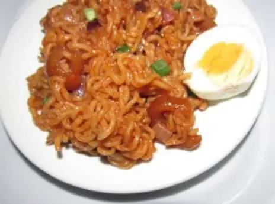

Indomie-Jollof

Description
The above image is the finished product of a Nigerian indomie-jollof
It is very easy to make as long as you have the right ingredients
ingredients
- Indomie
- Raw Tomatoes
- Tin Tomatoes
- Eggs
- Green Peas
Steps
Below are the steps to prepare this meal
- Start boiling your Eggs
- Put water into the pot and put it on fire
- When it starts boiling you add the Indomie
- As soon as the indomie becomes a bit soft you add your sliced indomie and the green peas
- After this you add the sliced raw tomatoes and the tin Tomatoes
- Finally add a little groundnut oil
- Stir and when it dries up your food is ready